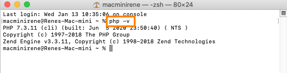
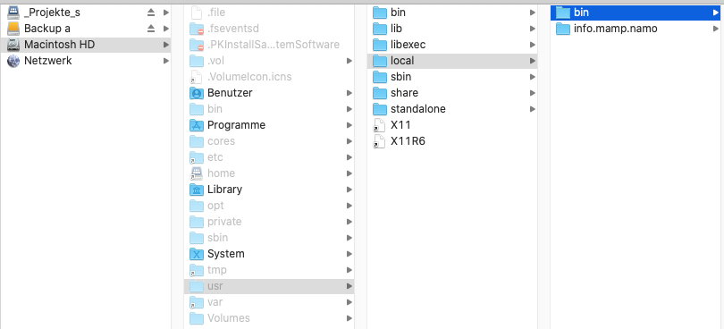

Auf dem Mac ist PHP höchstwahrscheinlich schon installiert, allerdings nicht in der aktuellsten Version
php -v oder php –version

Falls du eine noch ältere Version hast (was jedoch höchst unwahrscheinlich ist):
Installiere zuerst "homebrew", Anleitung:
brew.sh/
brew search php
Listet dir alle Versionen von PHP auf, die zur Verfügung stehen, darauf kannst du dir eine Version installieren, zum Beispiel die Version 7.3:
brew update
brew install php@7.3
a. Blende die "Invisibles" ein, so wie wir das beim Thema ".htaccess" gemacht haben.
b. Checke ob, das Verzeichnis /usr/local/bin auf deinem Mac existiert. Falls nicht, musst du es anlegen!

c. Besuche die Seite www.laravel-seminar.de/composer-installieren-unter-mac-os/
und mache alle Schritte durch
Hinweis: im Editor "Nano" bedeutet ^ = ctrl-Taste
Der letzte Schritt Das erneute Laden ist künftig nicht mehr notwendig. Die Datei wird automatisch geladen bevor wir ein neues Terminal Fenster öffnen! ist allenfalls, je nach Betriebssystem, nicht erfolgreich. Die Entwickler von Apple geben alles, um dein Leben schwer zu machen ...
Somit musst du leider jedes Mal, wenn du Composer verwenden möchtest, den Befehl
source ~/.bash_profile
eingeben, um mit Composer zu arbeiten